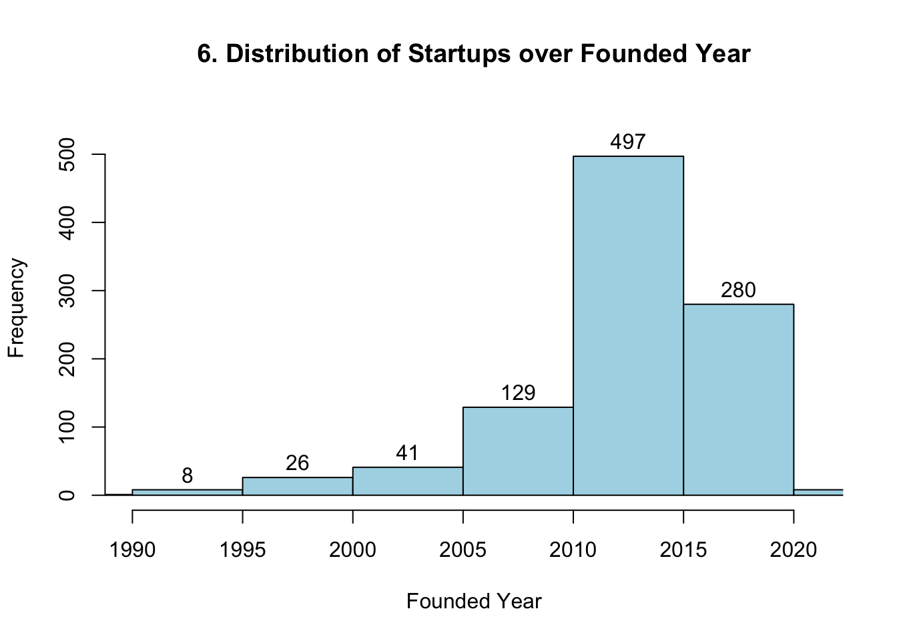
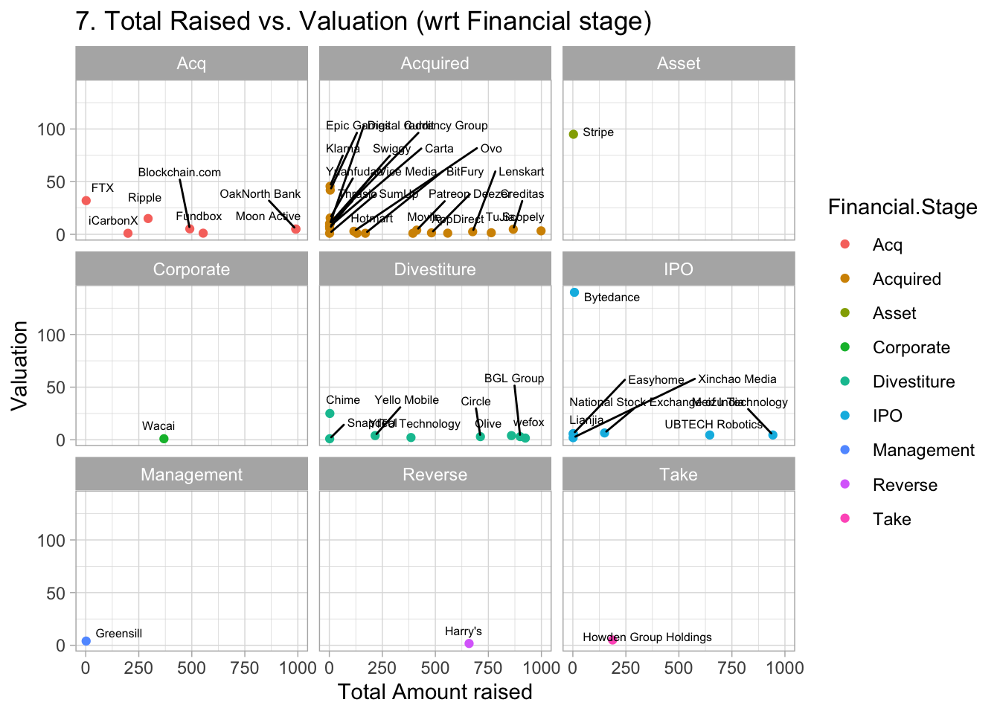
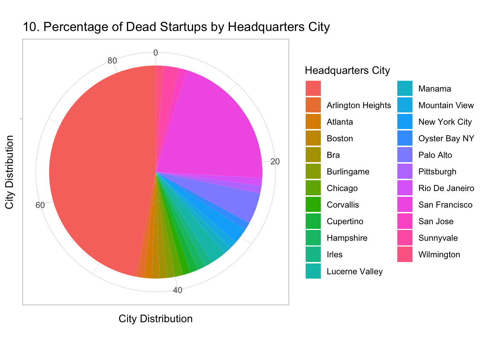

Startup Analysis
1
Introduction
2
Proposal
2.1
Research topic
2.2
Data availability
3
Data
3.1
Sources
3.2
Cleaning / transformation
3.3
Missing value analysis
4
Results
5
5. Did the founding year have an impact on valuation ———————————————————————-
6
uni %>%
7
select(Date.Joined, Valuation) %>%
8
mutate(year=year(Date.Joined)) %>%
9
group_by(year) %>%
10
summarise(count=n(),
11
avg_valuation=mean(
Valuation
)) %>%
12
ggplot(aes(x=year,y=avg_valuation,size=count))+
13
geom_point(aes(color=as.factor(year)))+
14
labs(title=“5. Founding year vs. Unicorn valuation & Unicorn count”,
15
y=“Average valuation ($B)”,
16
x=“Year”,
17
size=“Unicorns count”)+
18
guides(color=“none”)
19
11 Amount Raised in Different Funding Rounds vs Status of Startup
20
df
\(Amounts_raised_in_different_funding_rounds <- scale(df\)
Amounts_raised_in_different_funding_rounds)
21
Interactive component
22
Conclusion
Published with bookdown
Startup Analysis
Chapter 18
guides(color=“none”)


